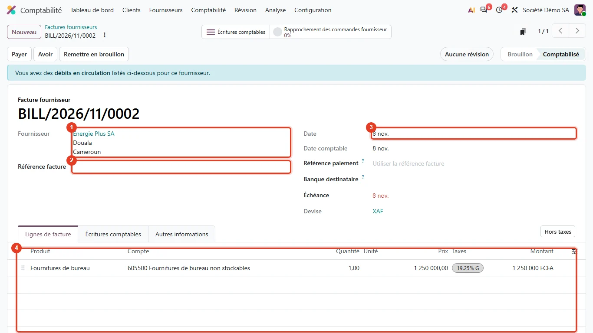

Enregistrer une facture fournisseur
Objectif. Enregistrer une facture d'achat avec le bon compte de charge et la TVA déductible.
Menu Odoo 15Comptabilité > Fournisseurs > Factures
Étapes
- Cliquez sur Nouveau (ou téléversez le PDF de la facture).
- Choisissez le fournisseur (1) et saisissez la référence de sa facture (2).
- Indiquez la date de facturation (3).
- Dans les lignes (4) : libellé, compte de charge, montant hors taxes et TVA déductible.
- Vérifiez le total avec la facture papier, puis Confirmez.

À vérifier
- La référence du fournisseur est saisie : Odoo signale alors les doublons.
- La TVA déductible correspond à la nature de l'achat (biens, services, immobilisation).
À éviter
- Ne mettez pas une immobilisation dans un compte de charge.
Exercice
Enregistrez une facture de fournitures de 450 000 HT avec TVA.